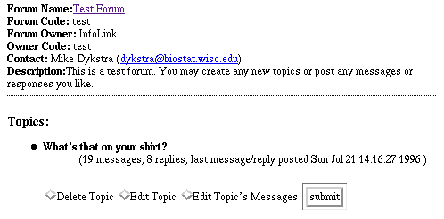

Edit Topics and Messages
This page can be access from the Edit Forums page from the
administration page. Here you can edit all of the topics of a particular
forum, delete topics, and edit messages. You can also edit or delete
individual messages and their replies.

Delete Topic
This choice will delete a topic from the topic list and remove all
of its messages and replies. Just as in the delete forum page you
will be provided with a verification page that indicates exactly
what you are about to delete. If this is correct click on the submit
button to delete the topic.
Edit Topic
This will present you with a page that will contain all of the topics current
values presented in editable text boxes. Use this option to change any
of the topics parameters from their current settings. There is an option
here to update the topics date, use this to change the creation date of
the topic to the current date by choosing yes.
Edit Topic's Messages
This option produces a page of all of the current messages and any replies
for a topic. The messages are listed as they appear in to the user in expaned
mode. Topics are indented and displayed below a message. Each message
or topic has two options, Delete or Edit. Choosing
Delete will delete a message and any of its replies or an individual
reply. Edit will allow you to edit any of a messages parameters.
Go on to Manage Forum Owners
Copyright © 1995, 1996 Board of Regents of the University
of Wisconsin System. All rights reserved.
|